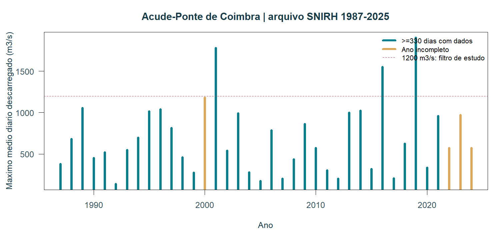
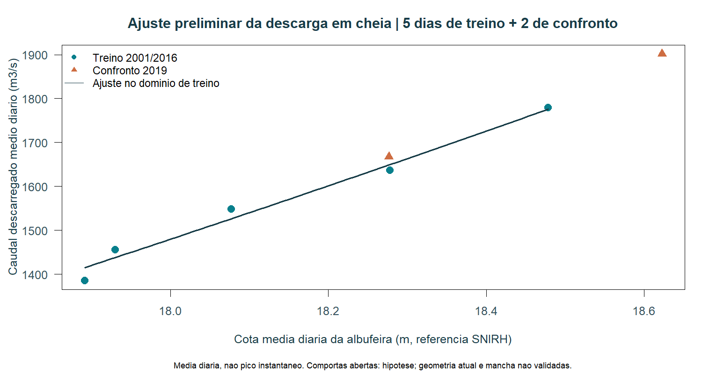
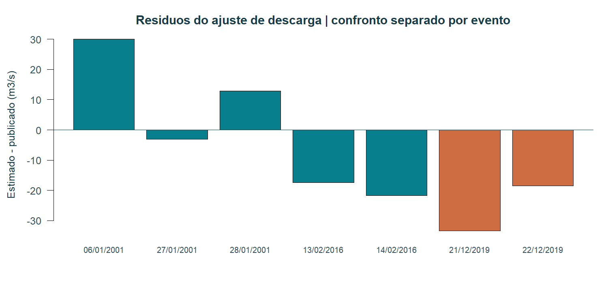
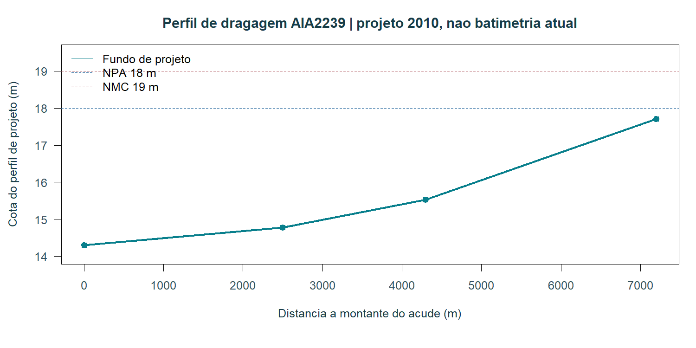

IGNISPYROFLOODS · V0.2 · 24/10/2026
O ajuste diz respeito à descarga média diária em cheia no açude. Não valida a altura em toda a cidade nem as freguesias inundadas.
13314 valores de caudal descarregado médio diário, 1987–2025, na estação Açude-Ponte 12G/01AE. Foram localizados perfis e peças DWF históricas de 2008 e um perfil de dragagem de projeto de 2010. Não há uma batimetria atual completa importada.
| Componente | Resultado |
|---|---|
| Coeficiente C | 1,499942 m^(1/2)/s |
| Treino | 5 dias / 3 eventos, 2001 e 2016 |
| Confronto reservado | 2 dias de 2019; 1 fora do domínio de treino |
| RMSE treino | 19,26 m³/s |
| RMSE confronto, inclui extrapolação | 27,01 m³/s · diagnóstico |
| Confronto dentro do domínio | 1 ponto: erro 18,48 m³/s |
| Domínio de cota do treino | 17,8917–18,4783 m |
| Aceitação da mancha operacional | Não |
Q = C × 138,6 × (Z − 14,3)^(3/2). Média diária e hipótese de comportas livres: não aplicar a pequenas descargas com nível controlado. Não se converte o Q10 diário anterior em pico instantâneo.

Anos incompletos são assinalados; máximo médio diário não é caudal instantâneo.

A linha termina no domínio de treino. O triângulo fora desse domínio não é uma validação aceite.

Resíduo = estimado − publicado. Apenas um dia do confronto está dentro do domínio de treino.

Perfil do parecer AIA2239 de 2010; não representa uma medição atual do fundo.
As descargas reais alimentam o pacote de fronteiras e a integração de volumes entre amostras. Aguieira e Raiva não são somadas duas vezes. Falta de contributos, horários incompatíveis e referências verticais por reconciliar bloqueiam o uso da soma como caudal total e a publicação da mancha atual.
Continuam necessários: batimetria/XYZ e secções atuais, transformação vertical, abertura de comportas e condição de jusante, pares Q/H instantâneos e validação independente de eventos e áreas inundadas. A avaliação deve registar falsos positivos, omissões e erros de nível/tempo; ainda não foram medidos esses desempenhos.
Código R · CSV diário · Pares de ajuste · Métricas · Ambiente R · Fronteiras e balanço · Proveniência e limites
Na raiz do repositório: node tools/export-r.cjs, depois Rscript --vanilla tools/coimbra-analysis.R e node tools/package-review.cjs. Não requer pacotes R externos.